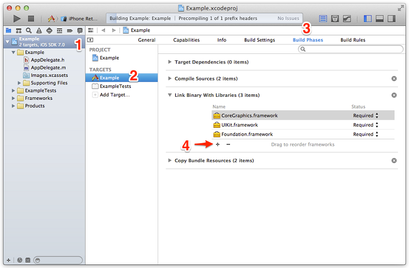
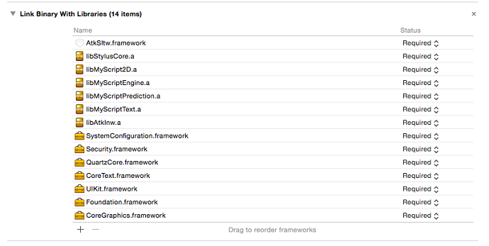
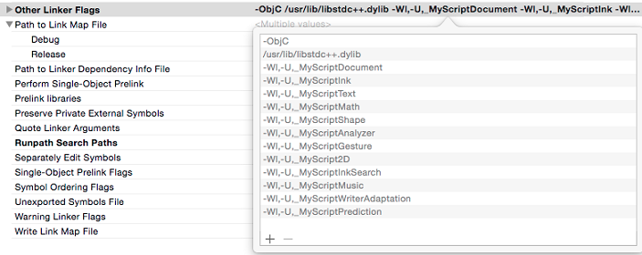
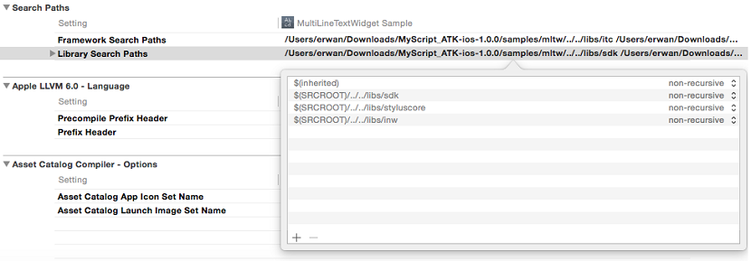
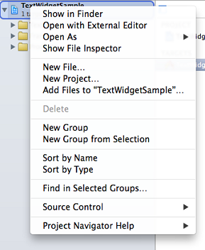
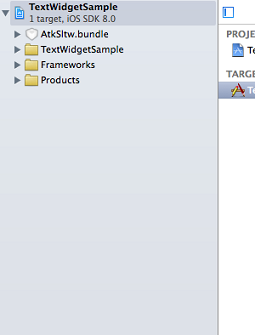

To install and integrate the Single Line Text Widget on iOS, you must be using the latest version of Xcode and iOS SDK. Minimum deployment target is 7.0.
The Single Line Text Widget for iOS is a framework that you add to your Xcode project.




The Single Line Text Widget requires some specific resources like images and fonts. To link these resources, add AtkSltw.bundle to your project.
 
Resources should include at least an AK type resource. More LK resources can be added as well, to improve and/or specialize the handwriting recognition.
For example, in US English, resources should be at least:
To use the Single Line Text Widget in your app, add the following import instructions:
#import <AtkSltw/SLTWTextWidget.h>// Create the SLTWTextWidget View Controller
SLTWTextWidget *_textWidget = [[SLTWTextWidget alloc] init];
_textWidget.delegate = self;
// Recognition resources
NSArray *en_US = [NSArray arrayWithObjects:
[mainBundle pathForResource:@"en_US-ak-cur.lite" ofType:@"res"],
[mainBundle pathForResource:@"en_US-lk-text.lite" ofType:@"res"],
nil];
// Certificate
NSData *certificate = [NSData dataWithBytes:myCertificate.bytes length:myCertificate.length];
// Configure the SLTWTextWidget View Controller with the recognition resources and the certificate
[_textWidget configureWithLocale:@"en_US"
resources:en_US
lexicon:NULL
certificate:_certificate];
// Set the Single Line Text Widget as input view of the field
[self _setInputView:_textWidget.view forTextField:_myField];